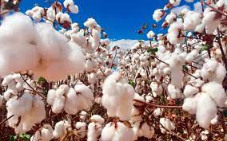
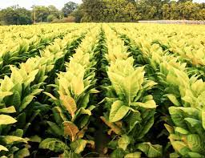
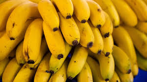
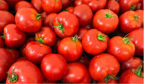

Soja
É uma planta pertence à família Fabaceae, família esta que compreende também plantas como o feijão, a lentilha e a ervilha. A palavra "soja" vem do japonês shoyu.
Originária do Japão e China
Milho
Cultivado em grande parte do mundo e extensivamente utilizado como alimento humano ou para ração animal devido às suas qualidades nutricionais.
Originário do México
Cana-de-açúcar
É utilizadas principalmente para a produção de açúcar e etanol. Tem caules robustos, fibrosos e articulados que são ricos em sacarose. Ela pode chegar a até seis metros.
Originária do sul da Ásia
Café
A semente é uma pequena esfera verde, que quando atinge o estado maduro para a colheita tem um vermelho intenso.
Originário da Árabia

Algodão
Caracterizada por sua fibra macia e curta, que é amplamente utilizada na indústria têxtil para a produção de tecidos, roupas e outros produtos.
Originário do Nordeste Brasileiro
Arroz
Para poder ser cultivado com sucesso, o arroz necessita de água em abundância, para manter a temperatura ambiente dentro de intervalos adequados.
Originário da ÁsiaTrigo
O grão de trigo é um alimento básico usado para fazer farinha e, com esta, o pão, na alimentação dos animais domésticos e como ingrediente na fabricação de cerveja
Originário do Oriente Médio
Laranja
A laranja é um híbrido entre o pomelo e a tangerina. Em 1987, as laranjeiras foram consideradas a árvore frutífera mais cultivada do mundo. As laranjeiras são amplamente cultivadas em climas tropicais.
Originária da China Meridional e Índia

Tabaco
É um produto agrícola processado a partir das folhas de plantas do género Nicotiana. É consumido como uma droga recreativa sob a forma de cigarro
Origem americana
Cacau
O cacau é a principal matéria-prima do chocolate, feito por meio da torra e moagem das suas amêndoas secas em processo industrial ou caseiro.
Origem Maia e Mexicana

Banana
o termo refere-se às frutas de polpa macia e doce que podem ser consumidas cruas. Elas formam-se em cachos na parte superior dos "pseudocaules".
Originária do Sudeste da Ásia
Mandioca
O seu consumo só pode ocorrer depois de uma etapa de cozimento que reduza o conteúdo de HCN (cianeto de hidrogênio) para níveis muito baixos.
Originária da América do Sul

Tomate
Da sua família, fazem também parte as berinjelas, as pimentas e os pimentões, que integram a família das Solanáceas, além de algumas espécies não comestíveis.
Originário da América do Sul e Central
Batata
A espécie começou a ser cultivada por civilizações andinas há cerca de oito mil anos e o cultivo foi aperfeiçoado pelos Incas.
Originária da Cordilheira dos Andes